Типографика и анимация текста
Текст в моушн-графике сообщает информацию, организует внимание и создаёт образ. Хорошая анимация начинается с понимания того, что зритель должен прочитать и почувствовать, затем с типографической композиции и только после этого с выбора движения.
В этой теме разберём роли текста, сочетание шрифтов, иерархию и читаемость во времени. Затем перейдём к текстовым слоям After Effects, маскам, аниматорам и селекторам.
Где применяется текст в движении
Текст встречается в титрах кино, рекламе, заставках, интерфейсах, образовательных роликах, музыкальных видео и анимированных плакатах. В одной работе у него могут быть разные роли. Имя героя нужно прочитать, название фестиваля может одновременно сообщать информацию и выражать характер события.
| Роль текста | Примеры | Задача движения |
|---|---|---|
| Информативная | Подписи, Lower Thirds, даты, названия, цены, титры. | Представить информацию в нужном порядке и дать время её прочитать. |
| Объясняющая | Подписи к схемам, термины, шаги инструкции, данные. | Связать текст с объектом или действием и помочь понять последовательность. |
| Навигационная | Названия разделов, кнопки, статусы, сообщения интерфейса. | Показать изменение состояния и помочь ориентироваться. |
| Выразительная | Анимированный плакат, айдентика, рекламный слоган. | Передать характер через форму букв, масштаб, ритм и композицию. |
| Повествовательная | Кинетическая типографика, текст под речь или музыку. | Выстроить последовательность слов, смысловые акценты и развитие фразы. |
| Субтитры | Передача речи и значимых звуков в текстовой форме. | Сохранить связь с происходящим и удобство чтения. Сложное движение здесь требует особой осторожности. |
Это рабочее разделение по задачам, а не строгие жанры. Информационный текст тоже может быть выразительным. Но если нужно прочитать имя или инструкцию, эффект должен помогать чтению.
Как в этом примере сочетаются сообщение информации и создание образа события? Какие слова становятся главными за счёт размера, положения и движения?
Типографика до анимации
Типографика включает выбор шрифта и начертания, размеры, интервалы, длину строки, выравнивание и отношения между текстовыми блоками. Шрифт является частью композиции: он должен сочетаться с изображением, графикой, пространством и характером движения.
Иерархия: что прочитать первым
Определите главный текст, уточнение и служебную информацию. Различайте их размером, начертанием, контрастом и положением. Если все элементы одинаково крупные, яркие и подвижные, зрителю трудно выбрать точку входа.
Проверьте неподвижный кадр до анимации. Понятен ли порядок чтения? Есть ли свободное пространство вокруг главного сообщения? Затем проверьте, сохраняется ли эта иерархия в движении.
Как сочетать шрифты
Для начала попробуйте одну гарнитуру с несколькими настоящими начертаниями: например, полужирный заголовок и обычный текст. Это позволяет получить различия, сохраняя общий характер букв. Несколько шрифтов нужны тогда, когда у них есть разные роли.
- Назначьте роли: заголовок, основной текст, подпись.
- Выберите заметный и осмысленный контраст. Он может строиться на начертании, пропорциях или сочетании шрифта с засечками и без них.
- Сравните высоту строчных букв, насыщенность и плотность. При одинаковом размере в пунктах разные шрифты могут выглядеть неодинаково крупными.
- Проверьте пару на реальных словах и нескольких кадрах будущей анимации.
Два почти одинаковых шрифта иногда создают случайное различие вместо понятной иерархии. А два очень характерных шрифта могут спорить за внимание. Оценивайте сочетание в конкретной композиции, а не только по названию гарнитуры.
Для русскоязычного проекта проверьте кириллицу, цифры, знаки и нужные начертания. Условия использования выбранного шрифта также должны подходить проекту. Не заменяйте отсутствующее начертание искусственным растяжением или сжатием букв.
Интервалы и выравнивание
Кернинг регулирует расстояние между конкретной парой букв. Трекинг меняет интервалы в выбранном фрагменте текста. Интерлиньяж задаёт расстояние между строками.
Слишком тесные буквы могут сливаться, а слишком разреженное слово распадаться на отдельные знаки. После изменения размера и движения проверьте интервалы снова. Заголовок из прописных и длинный абзац требуют разных решений.
Выравнивайте блоки по общим осям. Следите за краями строк, положением подписей и отношением текста к объектам в кадре. Свободное место вокруг текста так же важно, как сами буквы.
Читаемость во времени
В статичном плакате зритель выбирает темп чтения. В анимации автор управляет длительностью показа и сменой информации. Поэтому проверять нужно не только красивый кадр, но и весь переход.
- Проверьте контраст на самом сложном участке фона, а не только в первом кадре.
- Дайте тексту достаточное время в читаемом состоянии. Часть появления может участвовать в чтении, но не стоит считать весь переход полноценной паузой.
- Не анимируйте одновременно все параметры без смысловой причины. Масштаб, вращение, деформация и размытие вместе могут разрушить чтение.
- Проверьте результат в реальном размере показа: на телефоне, в интерфейсе или на экране аудитории.
- Посмотрите ролик без звука. Если сообщение должно быть понятным самостоятельно, оно должно сохраняться и без озвучивания.
Информативная подпись обычно требует устойчивого положения и спокойного ритма. Выразительный заголовок может деформироваться и занимать весь кадр, если смысл и условия показа это оправдывают. Один приём не подходит всем задачам.
Создание текста в After Effects
- Выберите Horizontal Type Tool или используйте Ctrl + T в Windows, Cmd + T в macOS.
- Щёлкните в Composition, чтобы создать точечный текст, или протяните рамку для абзацного текста.
- Введите текст и настройте гарнитуру, начертание, размер и интервалы.
- Проверьте выравнивание абзаца и положение слоя в кадре.
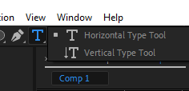
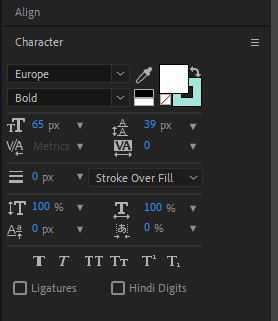
Character отвечает за оформление символов, Paragraph за абзац и выравнивание строк. Align помогает размещать слой относительно композиции или других слоёв. Недостающие панели открываются через Window; в новых версиях часть настроек также доступна в Properties.
Точечный текст удобен для короткой подписи. Абзацный текст использует рамку и переносится внутри неё. Изменение размера рамки и масштабирование слоя не являются одним действием.
Способы анимации текста
Выбирайте инструмент по тому, что должно измениться: весь блок, видимость, отдельные буквы, содержание или контуры. Так проще сохранить редактируемый текст и управлять результатом.
| Способ | Что меняется | Типичная задача |
|---|---|---|
| Transform слоя | Весь текстовый слой как один объект. | Перемещение подписи, общий масштаб или поворот. |
| Маска и Track Matte | Видимая область текста. | Появление из-за линии или внутри фигуры. |
| Text Animator и Selector | Параметры выбранных символов, слов или строк. | Последовательное появление, волна, акцент по словам. |
| Source Text | Сам текст или его форматирование во времени. | Смена сообщения; это не автоматическая плавная деформация букв. |
| Шейпы из текста | Векторные контуры букв после преобразования. | Авторская деформация. Результат уже не редактируется как обычный текст. |
| Эффекты и пресеты | Зависит от эффекта и состава пресета. | Стилизация или готовая отправная точка, которую нужно адаптировать. |
Transform: движение всего слоя
Параметры Position, Scale, Rotation и Opacity работают так же, как на обычном графическом слое. Проверьте Anchor Point: от его положения зависит восприятие общего масштаба и поворота.
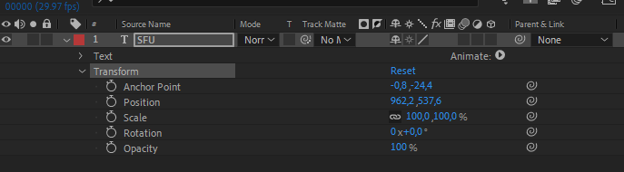
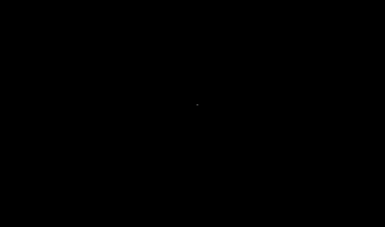
Маска и подложка
Маска на текстовом слое открывает или скрывает его участки. Для появления из-за линии часто достаточно двигать текст относительно маски. Через Track Matte можно использовать отдельный шейповый слой как подложку текста.
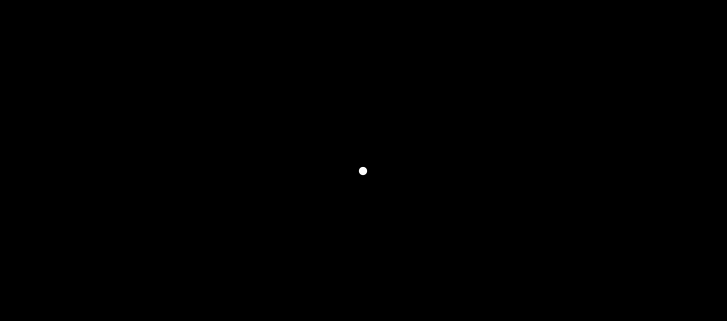
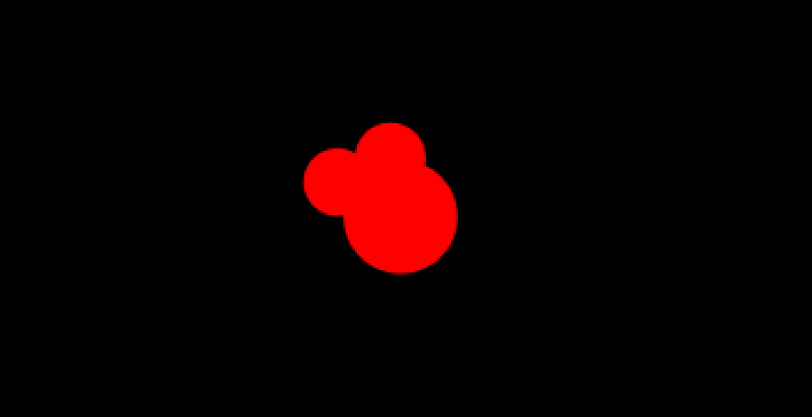
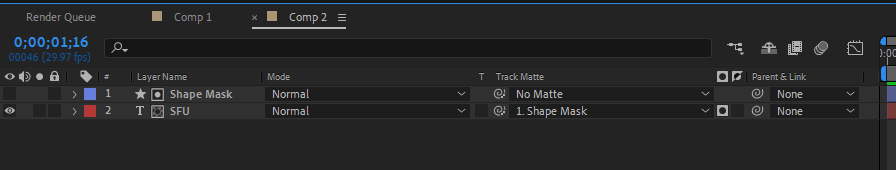
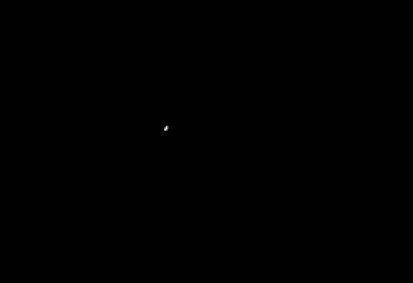
Text Animator: движение внутри слоя
Меню Animate у текстового слоя добавляет свойства аниматора. В отличие от Transform слоя они могут воздействовать на отдельные символы. Например, Scale аниматора меняет масштаб букв вокруг их опорных точек, а Scale слоя масштабирует весь блок.
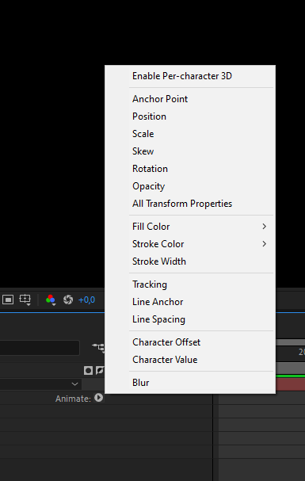
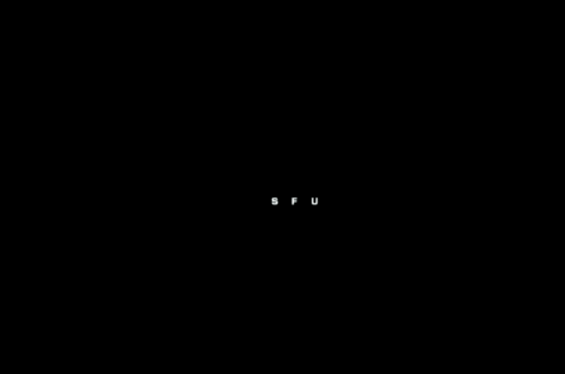
Animator задаёт, какое свойство изменяется и на какую величину. Selector определяет, какие символы затрагиваются и насколько сильно. В Range Selector параметры Start, End и Offset управляют выбранным диапазоном; в Advanced находятся дополнительные настройки формы и порядка воздействия.
Первый аниматор: последовательное появление
- Создайте короткий заголовок и откройте Text → Animate → Opacity.
- В Animator 1 установите Opacity = 0%. Выбранные селектором символы станут прозрачными.
- Оставьте End = 100% и Offset = 0%.
- Поставьте ключи Start: 0% в начале и 100% через одну секунду. Диапазон прозрачных символов будет сокращаться, открывая текст слева направо.
- В Advanced сравните воздействие по символам, словам и строкам через Based On. Пробелы могут учитываться отдельно в зависимости от режима.
- Измените длительность и настройки селектора, чтобы получить нужный ритм и мягкость появления.
Не перепутайте Opacity слоя и Opacity аниматора. Если текст исчез целиком и не появляется, сначала проверьте диапазон селектора и время ключей. Для следующего опыта добавьте Position в тот же аниматор и задайте небольшое смещение по вертикали.
Пресеты, эффекты и объём
В Effects & Presets есть категории текстовой анимации. Пресет полезен как заготовка: после применения нажмите U для просмотра анимированных свойств или UU для изменённых и разберите его устройство. Адаптируйте ритм, интервалы и движение к своей композиции.
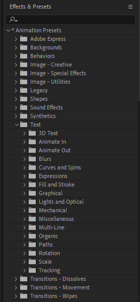
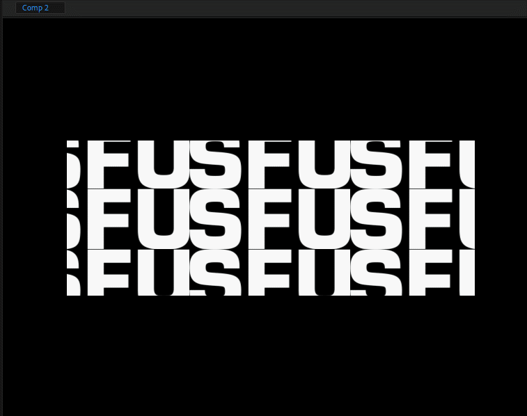
Режим 3D всего слоя и Enable Per-character 3D выполняют разные задачи. Первый располагает текстовый слой в пространстве, второй даёт аниматорам возможности работать с отдельными символами в 3D. Режим 3D сам по себе не добавляет буквам толщину; экструзия зависит от поддерживаемого рендерера и настроек геометрии.
Дополнительный видеопример из исходной страницы:
Примеры: текст как часть композиции
Смотрите не только на эффект. Отмечайте, что текст сообщает, как взаимодействует с графикой, когда читается и какие элементы поддерживают его характер.
Какие приёмы объединяют разные сцены? Как текст поддерживает ритм и визуальный характер студии?
Как названия связаны с персонажами, формами и монтажом? В какие моменты они становятся главным элементом кадра?
Как движение помогает выделять смысловые акценты? Какие изменения сохраняют читаемость, а какие работают прежде всего как выразительный образ?
Какие решения можно объяснить через уже изученные инструменты After Effects? Отделите принцип движения от программы, в которой создан конкретный пример.
Туториалы для практики
Эти русскоязычные уроки 2024 и 2025 годов заменяют прежнюю подборку. Выбирайте урок по задаче и разбирайте используемые инструменты, затем переносите принцип на собственный текст и композицию.
Актуальная русскоязычная справка: анимация текста в After Effects. Названия панелей и расположение настроек могут немного различаться между версиями.
Практика: одна фраза, две задачи
Возьмите короткую фразу из двух или трёх слов. Сделайте два решения с одним и тем же текстом: информационную подпись и выразительный анимированный заголовок.
- Определите, где зритель увидит каждый вариант и что должен прочитать первым.
- Соберите неподвижные композиции. Выберите гарнитуру или шрифтовую пару, выстройте иерархию и интервалы.
- Для подписи организуйте спокойное появление и достаточное время чтения.
- Для выразительного заголовка используйте аниматор, маску или изменение формы, связанное с характером фразы.
- Сравните варианты в реальном размере показа. Объясните, почему движение и типографика соответствуют разным задачам.
Эти принципы помогут доработать домашнее задание с Lower Thirds и анимацией смысла слова: сначала роль текста и композиция, затем инструмент и движение.